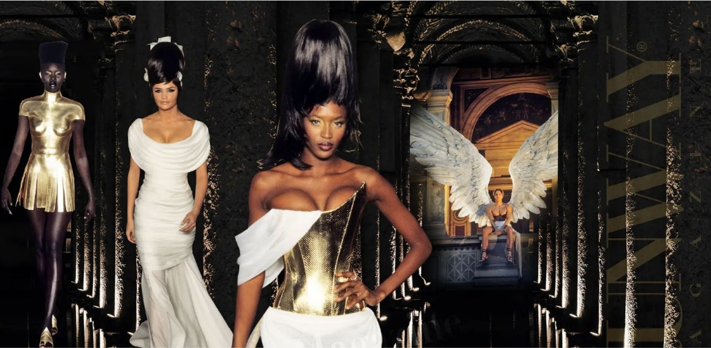
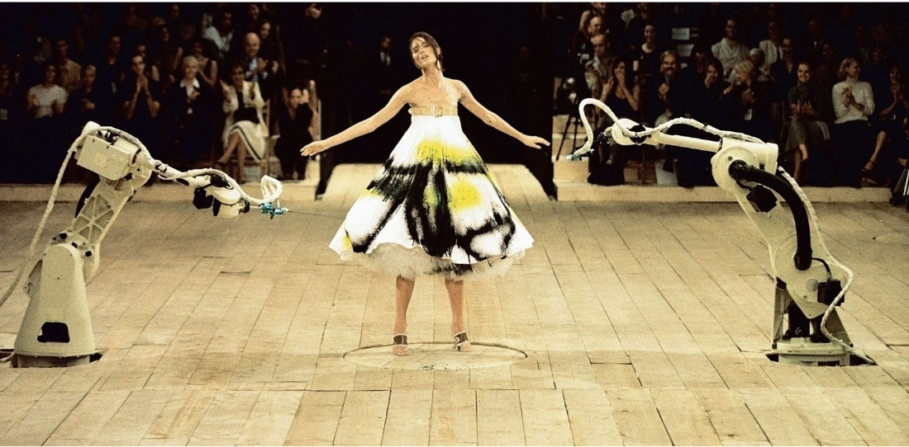
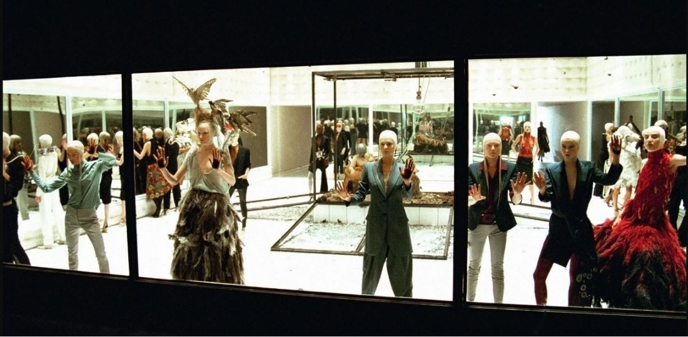
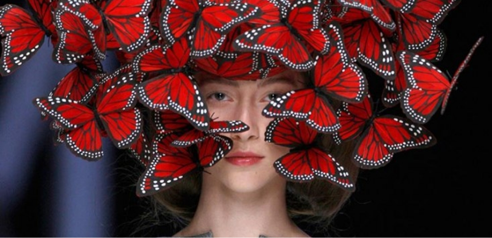

#1. Givenchy 1997 S/S by alexander McQueen #1. Givenchy 1997 S/S by alexander McQueen

The Search For Golden Fleece
#1. Givenchy 1997 S/S by alexander McQueen
첫 메이저 브랜드 데뷔 쇼인 Givenchy 1997 S/S 이다. 세상에 그의 존재를 확실히 각인 시킨 쇼이자 Givenchy 역사상 가장 문제가 된 쇼라는 평가도 받았다. 그리스 신화에 등장하는 황금양모와 이아손을 주제로 여신같은 전사를 만들고 싶어 하였다. 뿔을 달때도 과할 정도로 크게 만들고 의상들 각각에 마치 신화 속 등장인물을 보는 듯한 모습을 보여주었다.하지만 사람들에 평가는 달랐다. 프랑스의 디자이너들과 에디터들은 'Givenchy가 영국 얼간이한테 빼앗겼다.'라는 말까지 하며 기존의 Givenchy의 우아하고 절제된 아름다움을 지워버렸다는 평가로 McQueen을 적대시하는 여론이 더욱 강해지기 시작했다.
'그래도 난 계속 나다울 거야',' McQueen을 아무리 우아한 공간에 데리고 온다해도 여전히 McQueen이다.'라는 모습을 보여 주었지만 사람들의 비판은 거셌다. Givenchy의 고유 고객층도 McQueen이 민든 Givenchy를 떠나는 고객이 많아져 점차 그에게 거대한 압박과 스트레스를 가져다 주었다.
#2.Alexander McQueen Spring 1999 Ready-to-Wear Collection #2.Alexander McQueen Spring 1999 Ready-to-Wear Collection

NO.13
#2. Alexander McQueen Spring 1999 Ready-to-Wear Collection
Alexander McQueen Spring 1999은 기획 초기부터 McQueen이 로봇에 집착했다고 한다. 사람들은 평소에도 워낙 직흥적이어서 저라다 말겠지 했지만 쇼 전날, 무대에 로봇 팔 두게가 있는 것을 보고 McQueen의 팀원들은 놀랐다고 했다. 그리고 McQueen은 스튜디오로 가서 피날레 드레스가 필요하다고 하며 급하게 드레스를 만든 후 패션사에 영원히 기억남을 가장 충격적인 쇼를 시작하게 되었다. 기술자는 로봇을 조종하기 시작했고 McQueen은 계속 밀고 나갔다. 로봇들이 배우인냥 McQueen은 계속해서 연출하였다. 다들 못한다고 할 때 McQueen은 할 수 있다고 한다. 그것이 McQuen의 특기였다.
McQueen은 이 쇼를 자신이 처음으로 감격한 쇼라고 표현하였다. 인간과 기계의 피날레, McQueen은 꿈을 이루었으며 이 쇼를 보러온 모든 사람들도 감격하여 기립박수를 쳤다. 하지만 McQueen은 이후 더욱 더 힘들어지게 된다. McQueen의 브랜드는 이 쇼 이후 엄청난 관심을 받게되어 매출이 2배 상승하였으며 맞춤복 의뢰도 많아져 영국과 프랑스를 오가며 두 브랜드를 운영하는 McQueen에게는 너무나도 힘든 상황에 놓이게 된다. 성격 또한 감정적으로 변하는 순간이 많아져 점차 주위 사람들도 떠나가기 시작했다. 하지만 그는 멈출 수 없었다. 왜냐하면 그는 꿈을 이뤘기 때문이다.
#3.Alexander McQueen | Women's Spring/Summer 2001 | Runway Show #3.Alexander McQueen | Women's Spring/Summer 2001 | Runway Show

Voss
#3.Alexander McQueen | Women's Spring/Summer 2001 | Runway Show
Voss 쇼는 포스트 모더니즘 사진가 'Joel-Peter Witkin'을 모티브로 하였다. Witkin의 사진들은 대부분 섬뜩하고 기괴하며 McQueen의 당시 정신세계를 직관적으로 나타낸다. 원래 컨셉은 정신병원의 패드를 덴 방이었다. 하지만 McQueen은 이에 더 나아가 방 가운데에 또 다른 상자를 만들어 스텐릭 큐브릭과 정신병동이 만난듯한 느낌의 세트장이 완성되어 쇼의 극적인 분위기를 더욱 연출하였다. 양면 거울을 사용하여 초대된 관계자들은 쇼를 기다리면서 거울속에 자기 모습을 보고있어야 했다. 관객은 누구도 어떤 내용일지 전혀 예상하지 못했다. 그러다 쇼가 시작되자 안이 보였다. 모델들은 관객을 볼 수 없었다. 그 상황은 자신이 마치 관음증 환자가 된 듯한 기분을 들게 만들었고 이 쇼는 패션계의 악몽으로 기억된다.
이 쇼 이후 당시 Gucci 그룹의 수석 디자이너였던 Tom Ford는 McQueen에게 큰 잠재력을 알아보고 McQueen의 지분 50%인수라는 거절 못 할 제안을 하게된다. 비밀리에 미팅을 가져서 LVMH 관계자들은 뒷통수를 맞게된다. McQueen은 Tom에게 확실히 말하였다. 'McQueen은 100% 내가 혼자서 다 하겠다."

To my old Friend
#4.Alexander McQueen | Spring/Summer 2008
Isabella Blow가 세상을 떠난 뒤 McQueen은 깊은 어둠 속에서 지냈다.
영국 패션계의 거물을 발굴했던 패션 애디터 Isabella Blow가 세상을 떠났다. 그녀는 자랑스럽게 상상 이상으로 많은 걸 이루고 세상을 떠났음에 오히려 많은 이들에게 충격을 주었다. McQueen을 포함해서 말이다. McQueen에게 Isabella는 자신을 발견해주고 세상 앞에 세워준 인물이자 친구였다. McQueen은 하늘로 간 자신의 친구를 위해 자신의 브랜드 컬렉션을 Isabella를 위한 패션 쇼를 계획한다. 이 쇼에선 McQueen만의 디자인적 강렬함과 자극은 어디에도 찾아볼 수 없었다. 단지 옷에서 Isabella Blow가 보였고 그녀의 향기도 맡을 수 있었다. 무대 뒤에선 그녀의 자녀같은 McQueen이 흥분한 상태로 쇼를 준비하였다. 그녀의 믿음이 현재의 자신을 만들었고 지금 그 믿음에 보답하는 순간이었다. 쇼가 끝나고 무대로 나온 McQueen을 보며 사람들은 느꼈다. 우리가 얼마나 위대한 친구를 잃었고 그 친구를 얼마나 사랑했는지.